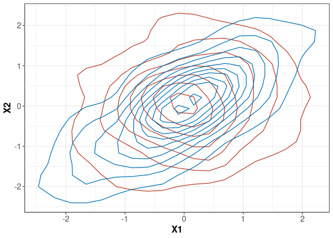
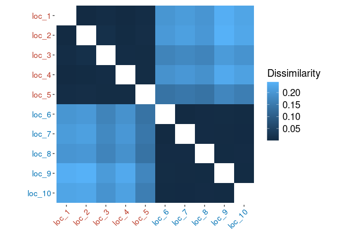
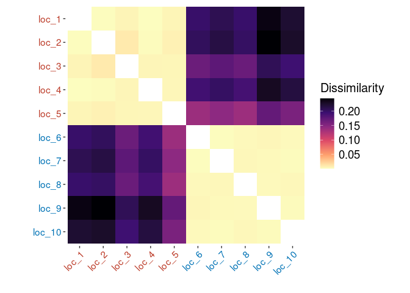

CeCl (Conditional extremes Clustering, pronounced ‘Cecil’) is an R package which implements the method described in O’Toole et al., 2025 (O’Toole et al., 2025) for clustering multivariate extreme events based on their tail dependence structures using the conditional extremes model of Heffernan and Tawn (Heffernan & Tawn, 2004). For more details of the methodology and usage of the package, please see its vignette by running vignette("CeCl") after installation.
Installation
You can install the development version of CeCl from GitHub with:
# install.packages("pak")
pak::pak("potoole7/CeCl")Quick usage
Once installed, you can apply the main CeCl workflow in three steps:
marg <- cecl_marg(data) # performs marginal transformation
dep <- cecl_dep(marg) # fits conditional extremes models
clust <- cecl_clust(dep) # clusters based on tail dependenceThis fits the conditional extremes models to each group/location and clusters them based on their tail dependence structure. For detailed options, see the function help pages (?cecl_marg, ?cecl_dep, ?cecl_clust) or the vignette (vignette("CeCl")).
Example
Here’s a basic example of how to use CeCl to cluster locations based on their tail dependence structures. Note that although we use spatial terminology here, the method is applicable to any multivariate data.
First, let’s generate some example data and visualise it. In this example, we want to generate data for 10 “locations” (clustered into 2 groups of 5 sites each) from a bivariate t-copula with different correlation parameters for different clusters.
library(CeCl)
library(copula)
library(dplyr)
library(ggplot2)
# function to generate multivariate t data with specified correlation
gen_t <- \(cor_t, n_vars = 2, n = 10000, n_locs = 5) {
# generate data
cop_t <- tCopula(param = cor_t, dim = n_vars, df = 3, dispstr = "ex")
u <- rCopula(n, cop_t)
data <- data.frame(apply(u, 2, qt, df = 3))
}
# generate data for two different correlation settings
set.seed(123)
data <- rbind(
gen_t(cor_t = 0.2), # first 5 locations have low correlation
gen_t(cor_t = 0.8) # last 5 locations have high correlation
)
# Add dummy location names
data$name <- rep(paste0("loc_", 1:10), each = 2000)
# visualise
data |>
mutate(cluster = ifelse(name %in% paste0("loc_", 1:5), "A", "B")) |>
ggplot(aes(x = X1, y = X2, color = cluster)) +
geom_density_2d(show.legend = FALSE) +
cecl_theme()
The two “true” clusters of locations clearly visible in our plot will have different tail dependence structures.
Now, we can use CeCl to try and recover these clusters based on their tail dependence structure. First, we perform an empirical transformation of the marginal data to standard Laplace margins, and then fit the conditional extremes model to each location.
# use ECDF to perform marginal transformation, thresholding at 90th percentile
marg <- cecl_marg(
data,
thresh_method = "quantile",
thresh_args = 0.9,
marg_method = "ecdf"
)
# see `help(cecl_marg)` for details on arguments and available methods
# fit conditional extremes model to each location at 90th dependence quantile
dep <- cecl_dep(obj = marg,cond_prob = 0.9)
# again, see `help(cecl_dep)` for details on arguments and available methodsFinally, we can cluster the locations into two clusters based on the fitted conditional extremes models.
# Cluster the fitted dependence models into 2 clusters
(clust <- cecl_clust(
dep,
marg_obj = marg,
k = 2,
cluster_mem = sort(rep(c(1, 2), times = 5)), # known cluster membership
seed = 123
))
#> Clustering results of class 'cecl_clust'
#> Number of locations: 10
#> Number of clusters: 2
#> Adjusted Rand index: 1#> Clustering results of class 'cecl_clust'
#> Number of locations: 10
#> Number of clusters: 2
#> Adjusted Rand index: 1We can visualise the dissimilarity matrix used for clustering as follows:
ggplot(clust, which = "image")

We can confirm from the Adjusted Rand Index from the printedcecl_clust object that the clustering has perfectly recovered the true clusters of locations based on their tail dependence structures. Our dissimilarity matrix plot also clearly shows two distinct clusters of locations.
License
This project is licensed under the MIT License - see the LICENSE file for details.